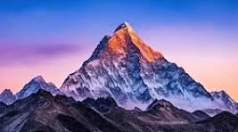

Mountains are really very beautiful and refreshing landscape to look at. Speaking in the geographical terms, mountains are highly elevated part of land. They attain greater height as compared to surrounding land. Mountains are one of the most prominent feature of the Earth’s landscape. They symbolize perfection, success, strength and many other positive traits. The highest tip of the mountain is called it’s ‘Peak’. Although there are other elevated land forms also like, Plateau, Cliff, Hills etc. but the height of mountain is greatest of all. The height of the mountain is calculated on the basis of mean sea level on Earth. Although there is no commonly agreed average height, above which an elevation can be considered a mountain. But in general terms, an elevation above 1,000 meters from the mean sea level can be considered as a mountain. When there are several mountain in continuation, they form a ‘Mountain Chain’. And when these Mountain Chains run parallel to each other, they are called a ‘Mountain Range’. Being at the great heights, most of the mountains are covered with the thick layer of snow throughout the year. And this scenic & serene natural beauty provides good opportunity of recreation also, to the tourists. Mountains generally have a broader base, while their top are narrower. At different altitudes of a mountain, different types
There are five basic kinds of mountains:

Mountains often serve as geographic features that define natural borders of countries. Their height can influence weather patterns, stalling storms that roll off the oceans and squeezing water from the clouds. The other side is often much drier. The rugged landscapes even provide refuge—and protection—for fleeing and invading armiesThe world's tallest mountain ranges form when pieces of Earth's crust—called plates—smash against each other in a process called plate tectonics, and buckle up like the hood of a car in a head-on collision. The Himalaya in Asia formed from one such massive wreck that started about 55 million years ago. Thirty of the world’s highest mountains are in the Himalaya. The summit of Mount Everest, at 29,035 feet (8,850 meters), is the highest point on Earth. The tallest mountain measured from top to bottom is Mauna Kea, an inactive volcano on the island of Hawaii in the Pacific Ocean. Measured from the base, Mauna Kea stands 33,474 feet (10,203 meters) tall, though it only rises 13,796 feet (4,205 meters) above the sea. Volcanic mountains form when molten ro.
